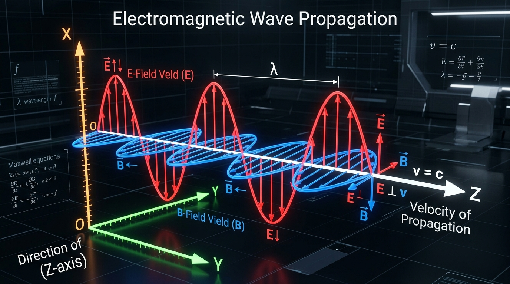
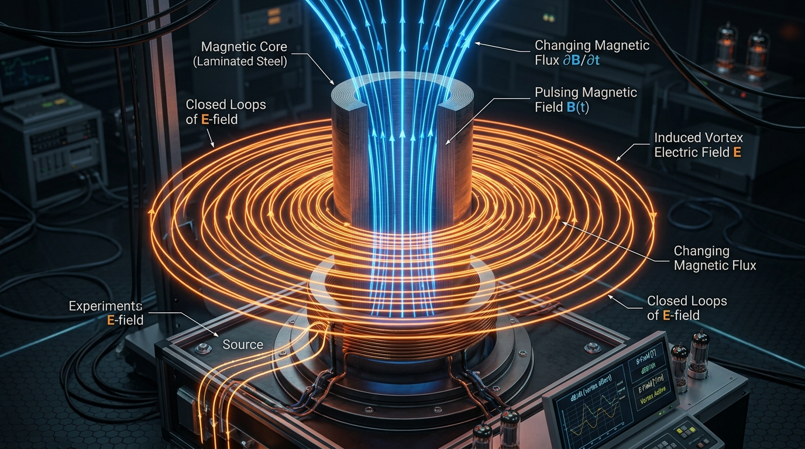
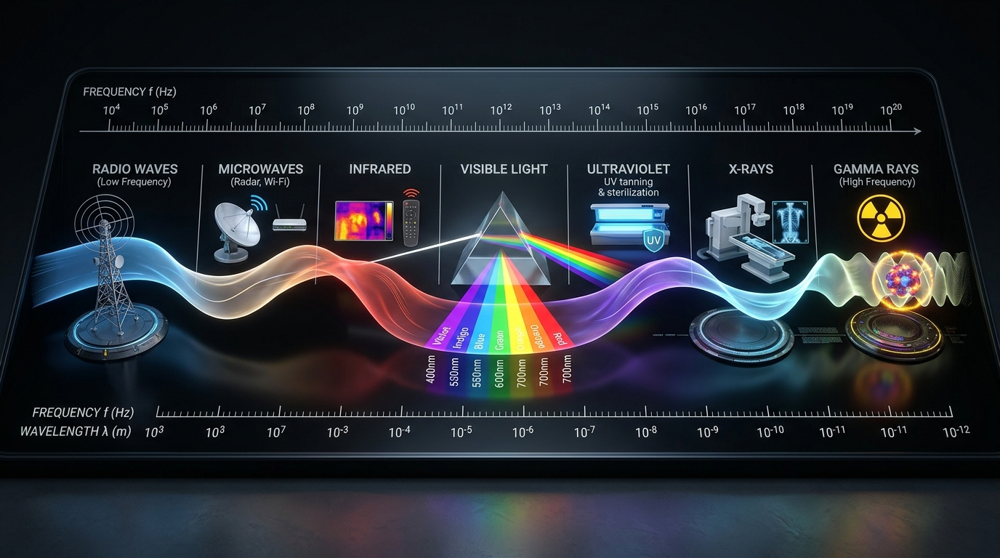

Bài 19: Điện Từ Trường. Mô Hình Sóng Điện Từ

Mô hình sóng điện từ: Vectơ cường độ điện trường E và cảm ứng từ B dao động đồng pha, vuông góc với nhau và vuông góc với phương truyền sóng
NỘI DUNG BÀI HỌC
1. Thuyết Điện Từ Maxwell & Điện Từ Trường
Vào nửa sau thế kỉ XIX, nhà vật lí James Clerk Maxwell đã tổng kết các định luật thực nghiệm về điện và từ (Coulomb, Biot - Savart, Ampère, Faraday) và đề xuất hai luận điểm cơ bản tạo nên Thuyết điện từ Maxwell:

Hình 19.1: Từ trường biến thiên sinh ra điện trường xoáy với các đường sức khép kín bao quanh các đường sức từ.
vatli102.com• Khi một từ trường biến thiên theo thời gian, nó sinh ra ở vùng không gian xung quanh một điện trường xoáy.
• Đặc điểm của điện trường xoáy: Các đường sức điện là những đường cong kín khép vòng bao quanh các đường sức từ, không có điểm bắt đầu và không có điểm kết thúc.
• Phân biệt với điện trường tĩnh: Điện trường tĩnh do điện tích đứng yên sinh ra, đường sức là đường hở (xuất phát từ điện tích dương, kết thúc ở điện tích âm hoặc ở vô cực).
• Khi một điện trường biến thiên theo thời gian, nó sinh ra ở vùng không gian xung quanh một từ trường.
• Đường cảm ứng từ của từ trường luôn là những đường cong khép kín bao quanh các đường sức điện.
• Ý nghĩa: Không chỉ có dòng điện dẫn (dòng chuyển dời có hướng của các điện tích) mới sinh ra từ trường, mà sự biến thiên của điện trường trong không gian (ngay cả trong chân không) cũng sinh ra từ trường.
Điện trường biến thiên và từ trường biến thiên không tồn tại biệt lập, tách rời nhau, mà liên quan mật thiết, chuyển hóa lẫn nhau và cùng tồn tại trong không gian dưới dạng một thực thể vật chất thống nhất duy nhất gọi là Điện từ trường (Electromagnetic Field).
2. Mô Hình & Đặc Điểm Của Sóng Điện Từ
Định nghĩa: Sóng điện từ là quá trình lan truyền của điện từ trường trong không gian theo thời gian.
Hình 19.2: Cấu trúc không gian của sóng điện từ: Vectơ cường độ điện trường E và vectơ cảm ứng từ B dao động vuông góc với nhau và vuông góc với phương truyền sóng v.
vatli102.com• 1. Sóng điện từ là sóng ngang: Tại mỗi điểm trên phương truyền sóng, vectơ cường độ điện trường $\vec{E}$ và vectơ cảm ứng từ $\vec{B}$ luôn vuông góc với nhau và cùng vuông góc với phương truyền sóng $\vec{v}$: $$\vec{E} \perp \vec{B} \perp \vec{v}$$ Ba vectơ $\vec{E}, \vec{B}, \vec{v}$ theo thứ tự đó tạo thành một tam diện thuận tuân theo quy tắc bàn tay phải (ngón cái chỉ chiều $\vec{v}$, các ngón còn lại khum từ chiều $\vec{E}$ sang $\vec{B}$).
• 2. Dao động đồng pha theo thời gian: Tại một điểm bất kì trên phương truyền sóng, dao động của điện trường và từ trường luôn cùng pha nhau (khi $E$ đạt cực đại thì $B$ cũng đồng thời đạt cực đại; khi $E = 0$ thì $B = 0$).
• 3. Lan truyền được trong chân không: Khác với sóng cơ học cần môi trường vật chất đàn hồi, sóng điện từ truyền được cả trong môi trường vật chất và trong chân không tuyệt đối. Tốc độ lan truyền của sóng điện từ trong chân không là cực đại: $$c \approx 3 \cdot 10^8\text{ m/s}$$ Trong môi trường vật chất có chiết suất $n > 1$, tốc độ truyền sóng giảm đi: $v = \dfrac{c}{n} < c$.
• 4. Mang năng lượng: Sóng điện từ mang năng lượng truyền đi trong không gian. Năng lượng của sóng điện từ tỉ lệ thuận với lũy thừa bậc bốn của tần số ($W \propto f^4$).
• 5. Đầy đủ tính chất sóng: Sóng điện từ tuân theo các quy luật truyền thẳng, phản xạ, khúc xạ và có khả năng xảy ra hiện tượng giao thoa, nhiễu xạ như ánh sáng.
Khi sóng điện từ truyền trong chân không ($v = c \approx 3 \cdot 10^8\text{ m/s}$):
• $\lambda$: Bước sóng điện từ trong môi trường ($\text{m}$).
• $c = 3 \cdot 10^8\text{ m/s}$: Tốc độ ánh sáng trong chân không.
• $f$: Tần số dao động của sóng điện từ ($\text{Hz}$), không đổi khi truyền qua các môi trường khác nhau.
• $T = \dfrac{1}{f}$: Chu kì dao động của sóng ($\text{s}$).
3. Thang Sóng Điện Từ
Thang sóng điện từ là bảng phân loại toàn bộ các bức xạ điện từ theo thứ tự giảm dần của bước sóng (hoặc tăng dần của tần số). Bản chất của tất cả các bức xạ trong thang sóng điện từ đều là sóng điện từ, nhưng chúng có bước sóng và tần số khác nhau dẫn đến các tính chất vật lí và ứng dụng thực tế khác nhau.

Hình 19.3: Thang sóng điện từ phân bố từ sóng vô tuyến, vi sóng, hồng ngoại, ánh sáng nhìn thấy đến tử ngoại, tia X và tia gamma.
vatli102.com| Tên vùng sóng | Phạm vi bước sóng trong chân không ($\lambda$) | Nguồn phát & Ứng dụng tiêu biểu |
|---|---|---|
| Sóng vô tuyến (Radio waves) | $\ge 1\text{ mm}$ (gồm sóng cực dài, dài, trung, ngắn, cực ngắn) | Phát thanh, truyền hình, mạng Wi-Fi, sóng di động 4G/5G, thông tin vệ tinh, hệ thống Radar. |
| Tia hồng ngoại (Infrared) | $760\text{ nm} \div 1\text{ mm}$ | Mọi vật có nhiệt độ lớn hơn $0\text{ K}$. Tác dụng nhiệt nổi bật: sấy khô, sưởi ấm, camera nhiệt ban đêm, điều khiển từ xa. |
| Ánh sáng nhìn thấy (Visible light) | $380\text{ nm} \div 760\text{ nm}$ (tím $\rightarrow$ đỏ) | Mặt Trời, bóng đèn sợi đốt, ngọn lửa. Giúp mắt người cảm nhận màu sắc thế giới xung quanh, quang hợp thực vật. |
| Tia tử ngoại (Ultraviolet - UV) | $10\text{ nm} \div 380\text{ nm}$ | Vật bị nung nóng trên $2000^\circ\text{C}$ (Mặt Trời, hồ quang điện). Khử khuẩn nước, tiệt trùng phòng mổ, tìm vết nứt bề mặt kim loại. |
| Tia X (Tia Rơnghen) | $10^{-12}\text{ m} \div 10^{-8}\text{ m}$ | Ống tia X (ống Coolidge). Khả năng đâm xuyên mạnh: chụp X-quang y tế, máy quét an ninh sân bay, kiểm tra khuyết tật đúc. |
| Tia gamma ($\gamma$) | $< 10^{-11}\text{ m}$ (ngắn nhất, tần số cao nhất) | Phản ứng hạt nhân, phóng xạ. Năng lượng cực lớn: xạ trị tiêu diệt khối u ung thư, bảo quản thực phẩm chiếu xạ. |
4. Ứng Dụng Thực Tế Của Sóng Điện Từ
Sóng vô tuyến (một phần của thang sóng điện từ) giữ vai trò huyết mạch trong kĩ thuật viễn thông hiện đại và hệ thống định vị thông minh trên toàn cầu:
Hình 19.4: Ứng dụng sóng điện từ trong truyền thông vệ tinh định vị toàn cầu GPS, mạng 5G và thiết bị kết nối IoT.
vatli102.com• Sử dụng sóng vô tuyến cực ngắn (vi sóng) ở dải tần gigahertz ($2,4\text{ GHz}, 5\text{ GHz}, 28\text{ GHz}$) để truyền dữ liệu số tốc độ cực cao.
• Bước sóng ngắn giúp truyền tải lượng thông tin lớn, kết nối hàng triệu thiết bị thông minh (smartphone, laptop, ô tô tự hành).
• Hệ thống vệ tinh GPS quay quanh Trái Đất liên tục phát các xung sóng vô tuyến cực ngắn mang thông tin thời gian chuẩn xác.
• Máy thu GPS trên mặt đất tính toán thời gian truyền sóng từ ít nhất 4 vệ tinh để xác định toạ độ kinh độ, vĩ độ và độ cao với độ chính xác đến hàng mét.
• Trạm radar phát xung sóng điện từ cực ngắn vào không gian. Khi gặp vật cản (máy bay, tàu biển), sóng bị phản xạ trở lại trạm thu.
• Dựa vào thời gian khứ hồi của xung sóng (kí hiệu là $t$), khoảng cách $d$ đến mục tiêu được xác định chính xác theo công thức:
• Sử dụng sóng điện từ tần số cao $f = 2,45\text{ GHz}$ có khả năng xuyên sâu vào bên trong thực phẩm.
• Điện trường biến thiên kích thích các phân tử nước có cực dao động xoay cực nhanh hàng tỉ lần mỗi giây, sinh nhiệt nội năng làm chín thức ăn từ bên trong nhanh chóng.
5. Các Dạng Bài Tập Trọng Tâm & Lời Giải Chi Tiết
DẠNG 1: XÁC ĐỊNH PHƯƠNG CHIỀU CÁC VECTƠ THEO QUY TẮC TAM DIỆN THUẬN
PHƯƠNG PHÁP GIẢI & QUY TẮC BÀN TAY PHẢI:
• Ba vectơ $(\vec{E}, \vec{B}, \vec{v})$ đôi một vuông góc tạo thành một tam diện thuận.
• Đặt bàn tay phải mở rộng sao cho ngón cái chỉ theo chiều truyền sóng $\vec{v}$. Các ngón tay còn lại khum theo chiều quay từ vectơ $\vec{E}$ sang vectơ $\vec{B}$.
• Chú ý: Dao động của $\vec{E}$ và $\vec{B}$ luôn cùng pha: khi một thành phần đạt cực đại/triệt tiêu thì thành phần kia cũng đạt cực đại/triệt tiêu tương ứng.
Ví dụ 1: Một sóng điện từ truyền thẳng đứng từ dưới lên trên theo phương thẳng đứng. Tại một thời điểm xác định, vectơ cảm ứng từ $\vec{B}$ hướng về phía Tây. Xác định hướng của vectơ cường độ điện trường $\vec{E}$ tại thời điểm đó.
Lời giải chi tiết:
• Theo quy tắc tam diện thuận của sóng điện từ, ba vectơ $(\vec{E}, \vec{B}, \vec{v})$ đôi một vuông góc với nhau.
• Phương truyền sóng $\vec{v}$ hướng thẳng đứng lên trên.
• Đặt bàn tay phải sao cho ngón cái choãi ra chỉ thẳng đứng lên trên (theo chiều $\vec{v}$). Vectơ $\vec{B}$ hướng về phía Tây. Để ngón tay khum từ $\vec{E}$ sang $\vec{B}$, lòng bàn tay phải hướng sao cho vectơ $\vec{E}$ có phương nằm ngang và hướng về phía Nam.
• Kết luận: Vectơ cường độ điện trường $\vec{E}$ hướng về phía Nam.
DẠNG 2: TÍNH TOÁN BƯỚC SÓNG, TẦN SỐ VÀ CHU KÌ SÓNG ĐIỆN TỪ
CÔNG THỨC CỐT LÕI:
• Trong chân không: $\lambda = \dfrac{c}{f} = c \cdot T \Longrightarrow f = \dfrac{c}{\lambda}; \quad T = \dfrac{\lambda}{c}$
• Trong môi trường chiết suất $n$: Tần số $f$ không đổi, tốc độ $v = \dfrac{c}{n} \Longrightarrow \lambda' = \dfrac{v}{f} = \dfrac{\lambda}{n}$
• Đổi đơn vị: $1\text{ MHz} = 10^6\text{ Hz}$, $1\text{ GHz} = 10^9\text{ Hz}$, $1\text{ nm} = 10^{-9}\text{ m}$, $1\text{ }\mu\text{m} = 10^{-6}\text{ m}$.
Ví dụ 2: Một đài phát thanh sóng vô tuyến phát ra sóng điện từ truyền trong không khí với tần số $f = 100\text{ MHz}$. Lấy tốc độ truyền sóng trong không khí là $c = 3 \cdot 10^8\text{ m/s}$.
a) Tính bước sóng của sóng vô tuyến này trong không khí.
b) Khi sóng này truyền vào một hồ nước có chiết suất $n = \dfrac{4}{3}$, tính tốc độ truyền sóng và bước sóng của nó trong nước.
Lời giải chi tiết:
a) Đổi tần số: $f = 100\text{ MHz} = 100 \cdot 10^6\text{ Hz} = 10^8\text{ Hz}$.
Bước sóng trong không khí là: $$\lambda = \frac{c}{f} = \frac{3 \cdot 10^8\text{ m/s}}{10^8\text{ Hz}} = \mathbf{3\text{ m}}.$$
b) Khi truyền vào trong nước có chiết suất $n = \dfrac{4}{3}$:
• Tốc độ truyền sóng trong nước: $$v = \frac{c}{n} = \frac{3 \cdot 10^8}{4/3} = 2,25 \cdot 10^8\text{ m/s}.$$
• Tần số của sóng giữ nguyên không đổi $f = 10^8\text{ Hz}$. Bước sóng trong nước là: $$\lambda' = \frac{\lambda}{n} = \frac{3\text{ m}}{4/3} = \mathbf{2,25\text{ m}}.$$
DẠNG 3: BÀI TOÁN RADAR VÀ TRUYỀN THÔNG VỆ TINH GPS
NGUYÊN TẮC TÍNH KHOẢNG CÁCH:
• Sóng radar là sóng phản xạ khứ hồi (đi và về), tổng quãng đường truyền là: $s = 2d = c \cdot t \Longrightarrow d = \dfrac{c \cdot t}{2}$
• Sóng vệ tinh truyền một chiều trực tiếp: $s = d = c \cdot t \Longrightarrow d = c \cdot t$
Ví dụ 3: Một trạm radar phát tín hiệu xung sóng điện từ về phía một chiếc máy bay đang bay. Sau thời gian $t = 80\text{ }\mu\text{s}$ kể từ lúc phát xung, trạm radar nhận lại được tín hiệu sóng phản xạ từ máy bay dội về. Lấy tốc độ truyền sóng điện từ trong không khí là $c = 3 \cdot 10^8\text{ m/s}$. Tính khoảng cách từ trạm radar đến máy bay tại thời điểm phản xạ sóng.
Lời giải chi tiết:
• Đổi thời gian: $t = 80\text{ }\mu\text{s} = 80 \cdot 10^{-6}\text{ s} = 8 \cdot 10^{-5}\text{ s}$.
• Vì sóng truyền từ trạm radar tới máy bay rồi phản xạ quay trở về trạm thu, nên quãng đường sóng truyền đi và về bằng hai lần khoảng cách từ trạm đến máy bay tại thời điểm phản xạ sóng:
$$2d = c \cdot t \Longrightarrow d = \frac{c \cdot t}{2}$$
$$d = \frac{3 \cdot 10^8\text{ m/s} \cdot 80 \cdot 10^{-6}\text{ s}}{2} = \frac{24000}{2} = 12000\text{ m} = \mathbf{12\text{ km}}.$$
• Kết luận: Chiếc máy bay cách trạm radar một khoảng $12\text{ km}$ tại thời điểm phản xạ sóng.